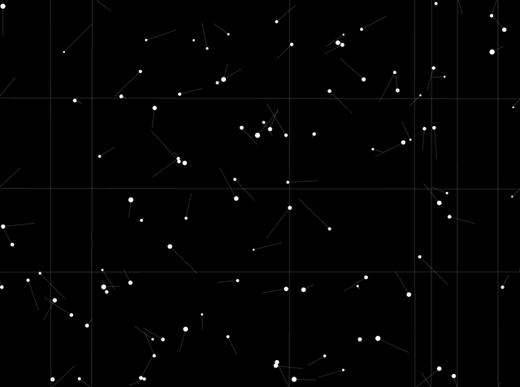
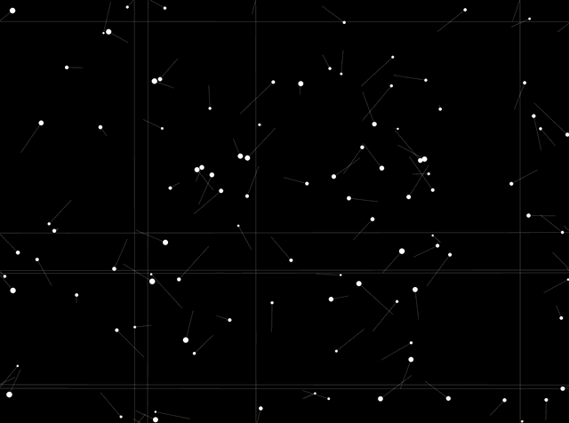
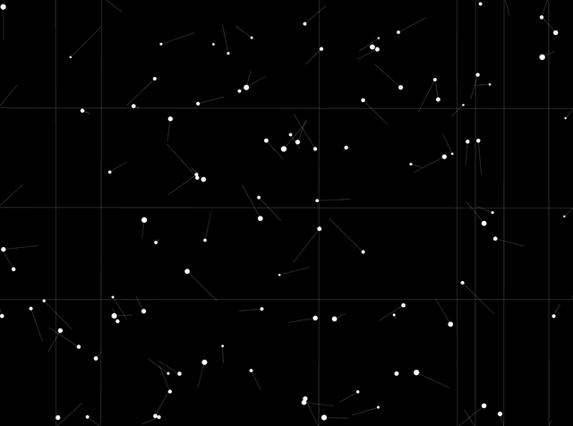
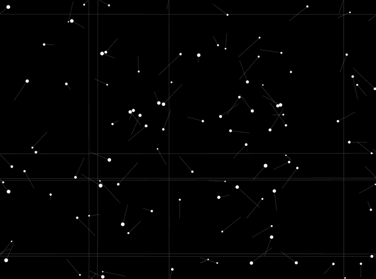
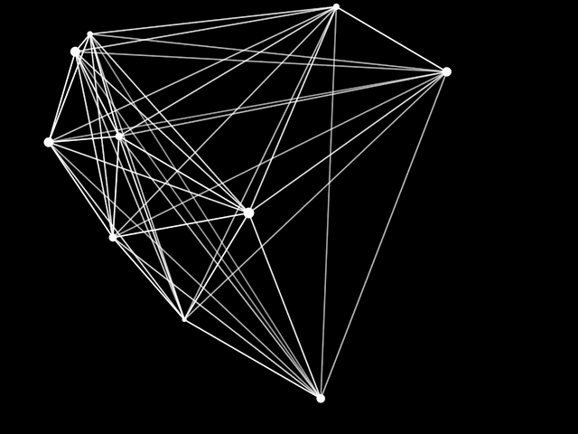
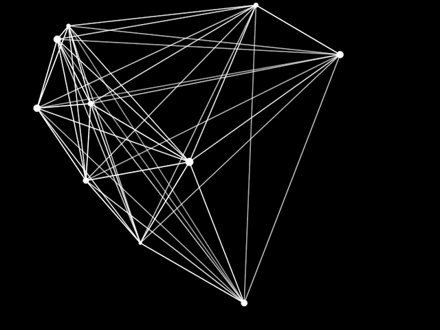

 



What are possible systems?
What are the elements of a system?
How can we compose new systems?
What are the synergies and gravitational forces that hold a system together?
Viewing complex systems composed of various interconnected scales and layers — I've ventured to experiment across scales, from macro to micro.
I've been trying to analyze complex systems by dismantling and decomposing them, breaking them down into their smallest components - to question the framework that models the behavior of individuals, collectives, and entire systems.
I’ve been exploring the “Nature of Code” and agent-based models to understand the principles of complexity, interaction, evolution, and adaptation. I'm intrigued by how these intricate topics are distilled into the essence of code and incorporated into our technologies, thus reflecting and shaping the possibilities of perceiving and designing systems.
I began my explorations by unpacking NYC’s energy system, aiming to understand its incentives, leverage, and pain points which drive inefficiency and unsustainable practices. I speculated on how this system could be restructured with a decentralised block chain based e-co-system.
I’ve been investigating the Rare Earth Metals, those elements were presumed to be rare and are integrated into our everyday life, enabling both the hardware and the software of contemporary life and potential sustainable futures.
My explorations spiral around the paradox inherent of these elements, not only in terms of occurrence but also in terms of effect. REE’s represent our fractured reality and duality of the presence.
I’m facsinated by the complexity of today's world and how change and innovation can enable transformative potential in one system cascade, allowing for emergent or even evolutionary properties across various scales.
These range from planetary systems and technologies, to infrastructure and the built environment, including energy systems, data infrastructure, mobility, governance, policy systems, DAOs, and decentralised systems.
Furthermore, they encompass systems of economy and finance, such as the circular economy, supply chains, and cryptocurrencies, extending to systems of thought, knowledge, and epistemologies.